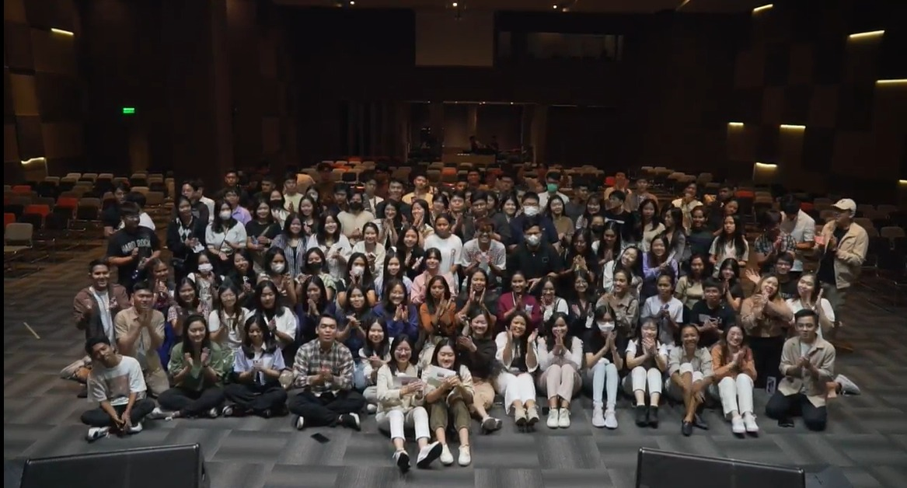

Previous Events

Shaun Found The Sheep
Acara Welcoming Party untuk Prasmulyan 2023, dengan tema “Found the Sheep : Discover your Home”. Disini kita belajar kalau setiap orang memerlukan rumah yang menerima mereka apa adanya dan kami ingin menyampaikan bahwa rumah yang apa adanya itu ada di komunitas kami. Komunitas yang saling menjaga satu sama lain dan saling bertumbuh.
READ MORE →
True Freedom, True Victory
Welcoming Party Prasmulyan 2024, mengenai kebebasan yang sejati akan membawa kita pada kemenangan di masa muda kita, dan kebebasan itu bisa kita dapatkan di dalam Tuhan serta di rumah Tuhan
READ MORE →